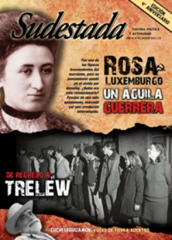

Buscar
Un dibujo en la celda del guerrillero
El 22 de agosto de 1972 quedaron truncas dieciséis historias. Lejos, en el frío patagónico de Trelew, después de la fuga más extraordinaria del pasado argentino, después de la acción unitaria más importante de tres de las organizaciones armadas revolucionarias que signarían un tiempo de lucha y resistencia, dieciséis nombres compañeros, jóvenes, rebeldes, dejaron un tendal de historias a medio camino. Aquí nos asomamos apenas a una de ellas, la de Rubén Pedro Bonet, el Indio. Además, una crónica de Pablo Waisberg, que acompañó a los familiares de regreso a Trelew, treinta y tantos años después.
Edición N° 91
Agosto 2010
Revista bimensual
Comprar edición impresaSumario
- Rosa Luxemburgo. Un águila guerrera
- Esos viejos papeles viajeros
- Todas las voces del Cuchi (Primera parte)
- "Hay que castigar la memoria de los genocidas"
- Un dibujo en la celda del guerrillero
- Jorge Amado. Flora y fauna
- "La normalidad es un invento"
- Eduardo Darnauchans. Tristezas de zurcidor
Compartir Articulo
1.La cámara recorre la escena. Ni la distorsión de la imagen ni la fritura del audio impide percibir a simple vista el fuerte contraste. Detrás de las palabras que eligen Rubén Bonet -del ERP- y Mariano Pujadas -de Montoneros-, expresadas con una tranquilidad que persigue como objetivo clarificar las ideas, sosegar los ánimos y preparar el terreno para la entrega del grupo guerrillero que quedó a minutos de escapar de Trelew; se olfatea la tensión extrema en el lugar. Están todos allí, apiñados en un pequeño rincón del aeropuerto, en silencio, escuchando a los compañeros responder las preguntas de los periodistas, respirando esos minutos de nerviosismo acumulado pero con la satisfacción de haber revertido una fuga frustrada en un acontecimiento político que, lejos de transmitir un perfil de tristeza o derrota, irradia ante las cámaras de la televisión una imagen de absoluto control de la escena. "La composición social de los diecinueve que estamos acá tiene evidencia de ser parte del pueblo. Acá hay compañeros obreros, trabajadores tucumanos de la zafra, campesinos, compañeros intelectuales, compañeros obreros industriales", apunta Rubén ante los micrófonos, después de explicar la simbólica continuidad de la lucha de las organizaciones armadas con la que desarrollaron a principios de siglo los peones rurales patagónicos. Sobre el problema de la violencia como último recurso, Bonet explica ante la prensa: "Nosotros hemos entendido que la única forma de combatir a la dictadura militar, al capitalismo, es organizándonos y creando una fuerza militar que derrote a la fuerza militar del enemigo... Nuestra violencia es la respuesta a esa violencia. La respuesta a la violencia del capitalismo. Somos el proletariado en armas".
Elige cada palabra. Como si supiera la importancia de cada gesto, transmite a través de una distorsionada escena una paz singular, no hay premura en la voz del guerrillero, no hay tensión; apenas un puñado de ideas de cara a miles de espectadores, de frente a un pequeño grupo de compañeros que ignora el destino que los esbirros de uniforme preparan para ellos, horas después. Por último, Bonet elige un eje que identifique a la operación, y por eso destaca la importancia de la acción común entre las organizaciones a través de un mensaje unitario que trasciende los hechos de Trelew, que habla también de un proyecto colectivo, en formación, en permanente construcción. Habla también, Rubén, de un sueño inacabado, y su voz no tiene tiempo ahora, cuando volvemos a revisar esa secuencia, cuando escuchamos otra vez: "En este sentido, bregamos por romper, por anular, en base a la discusión política, en base a la discusión frente a las masas, las pequeñas diferencias que tienen las distintas organizaciones armadas. Esto es una prueba de que en este momento les estemos hablando compañeros del ERP, de Montoneros, de FAR, y que coincidamos en que este hecho es nues¬tra voluntad. Tratar de lograr un ejército unido, de acabar con estas siglas que nos distinguen. En ese sentido, toda la discusión la haremos frente a las masas".
Algo germina en la voz del guerrillero. Como si un brote irrumpiera de su voz pausada y decidiera crecer, imposible, por entre los rostros distorsionados del resto de los compañeros que escucha con atención. Como si un trazo se asomara por detrás de la escena, y abrazara a todos los presentes esa tarde de agosto, en el aeropuerto de Trelew. Un trazo mínimo, un borrador desprolijo, un esbozo colectivo que rompe apenas el blanco del papel y empieza a cobrar forma.
2."...Con toda tu ingenuidad y sabiduría, vos, Hernán, me preguntaste: '¿Por qué papá no se defendió si sabía usar las armas?'... Y yo los escuchaba, y les repetía, mis hijitos, que todo lo que papá les había enseñado, les había contado, no se lo tenían que olvidar. Que papá quería que fueran compañeros, buenos hermanos, que compartieran sus cosas, sus chiches y sus juegos con todos los nenes. Que papá siempre iba a estar adentro de nuestros corazones y sus palabras en nuestras cabezas...
Pichoncitos, no habrá más caballitos en los hombros, ni peleas como 'hombres', ni paseos por el zoológico, ni fuentes, ni iglesias, ni dibujitos, y casitas de escarbadientes y cartón... Sólo recuerdos, sólo verbos en pasado, sólo llamaremos papá y no habrá respuesta. Y lloraremos y gritaremos en nuestra intimidad de rabia y bronca nunca acabada, y nos faltará todo lo que nos daba papá, su beso cotidiano, su mirada firme en sus ojos claros, su mechón siempre caído en la frente, y nos quedará todo lo que significa hoy para nosotros y para todo el pueblo argentino, sus 30 años agujereados por las balas, sus inmóviles brazos cruzados sobre su vigoroso pecho, sobre su piel joven e increíblemente viva...". [Fragmentos de la carta de Alicia Bonet a sus hijos, pocos meses después de confirmada la masacre.]
(La nota completa en la edición gráfica de Sudestada Nº 91 - Agosto 2010)
Comentarios
Hugo Montero
Articulos más vistos


LIBRERÍA SUDESTADA

Colección infantil

Distribuidora de Libros

Suscripción

Sudestada en URUGUAY

Otros articulos de esta edición
"La normalidad es un invento"
Los personajes de la narradora Samanta Schweblin se ven atrapados por una inquietante atmósfera, plena de tensión, de un suspenso ...
Rosa Luxemburgo. Un águila guerrera
Fue una de las figuras trascendentes del marxismo internacional pero, por distintas razones, su obra y su pensamiento político quedaron ...
Eduardo Darnauchans. Tristezas de zurcidor
"No se asuste si me escucha llorar, voy a estar leyendo a Shakespeare". Las palabras dichas a su enfermera quedaron ...
Todas las voces del Cuchi (Primera parte)
Nada es igual desde el Cuchi Leguizamón: con sus creaciones a la vez de raíz y de vanguardia, el pianista, ...
 Nuestra América
Nuestra América
Jorge Amado. Flora y fauna
Recorrido por algunos de los entrañables personajes que habitan en los libros de Jorge Amado, uno de los escritores más ...
"Hay que castigar la memoria de los genocidas"
Si podemos afirmar que Osvaldo Bayer hizo escuela, seguramente Marcelo Valko se graduó en ella con honores. Y no es ...